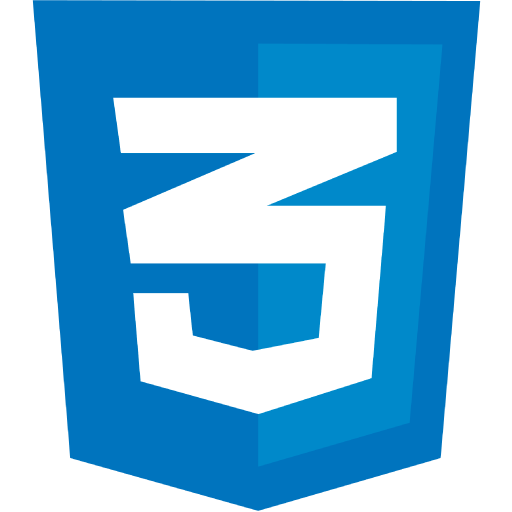
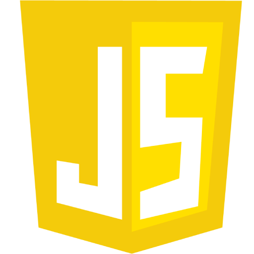
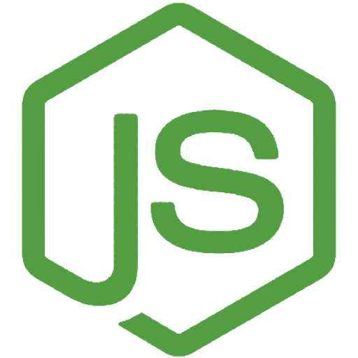
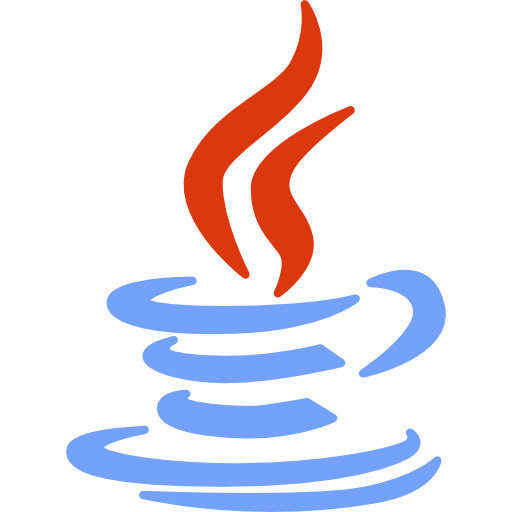

Devasse
Devasse
Seja Bem Vindo!
João Devson Mucavel
Desenvolvedor de Software
- Especialista em desenvolvimento Front-End
- Boas habilidades em desenvolvimento Back-End
- Sólidos conhecimentos em bases de dados
- DevOps Entusiasta
- IoT, VR & AR

Meu nome é João Devson Mucavel, nascido a 9 de Junho de 1991, concluí o ensino básico em 2006 e o ensino secundário geral em 2008.
Fui Graduado em Programação de Sistemas Informáticos pelo "Instituto Industrial e de Computação Armando Emílio Guebuza" em 2014 e tendo frequentado a Licenciatura em Administração de Sistemas de Informação e Redes na "Universidade São Tomás de Moçambique", (1º ano apenas), tenciono frequentar a Licenciatura em Programação de Sistemas Informáticos e de Telecomunicações na "Escola Superior de Ciências Náuticas de Moçambique".
Nascido de uma família humilde, isso me deu a oportunidade de aprender valores morais desde muito jovem, o que me ajudou a desenvolver um temperamento brando e qualidades como paciência, autocontrole, boa comunicação, trabalho em equipe e boa gestão do tempo, que são indispensáveis na carreira profissional.
Habilitações
HTML5
(99%)

CSS
(98%)

JavaScript
(89%)

NodeJs
(83%)

Java
(71%)
Experiência Profissional
ITGest Moçambique: Abril de 2019 - Presente
Web Developer: Desenvolvimento de soluções web - Portais e Plataformas de gestão. Implementação de uma solução de Service Desk no Banco de Moçambique: ID4Service. Análise e Desenvolvimento do Workflow de Abertura de Conta e de Contratação de Meios de Pagamento (Cartões e Cheques) para o Moza Banco.
Mobile Developer: Aplicações móveis - Android & iOS, utilização de Ferramentas para construção híbrida (Flutter, PWA).
Selft-Employed: Abril de 2017 - Presente
Web Developer: Desenvolvimento de soluções web - Potais e Plataformas de gestão..
Mobile Developer: Aplicações móveis - Android & iOS.
Internt-of-Things: Plataformas inteligfentes e autónomas.
AR & VR: Soluções em Realidade Aumentada & Virtual.
SanTech, Lda: Fevereiro de 2014 - Junho de 2014
Desenvolvimento de um E-Learning: Aprendizagem e prática de arquitetar um projeto de desenvolvimento de software, documentação e implementação. Desenvolvimento de um protótipo de um Sistema de Gestão de Estoques e Vendas, posteriormente utilizado como trabalho de conclusão de curso Projeto e Defesa no Instituto..
Brand Lovers: Agosto de 2018 - Abril de 2019
Web Developer: Desenvolvimento de soluções web - Websites, Portais & CMS's em Wordpress e "Plain" HTML/CSS & JavaScript.
Cloud Digital Arts: Junho de 2015 - Abril de 2017
Web Developer: Desenvolvimento de soluções web - Websites maioritariamente em "Plain" HTML/CSS & JavaScript & Wordpress.
FNB Moçambique: Junho de 2017 - Julho de 2017
Desenvolvimento do Website Atual: Padronização do CI internacional: de acordo com a nova imagem atualmente implementada em todo o Grupo FNB, participei do levantamento de requisitos e posteriormente repliquei o site e ajustei as necessidades do Banco.
Linhas Aérias de Moçambique: Agosto de 2013 - Novembro de 2013
Manutenção de Sistemas de Rede e Cabeamento: No Departamento de Infraestrutura: responsável pela implementação e manutenção de sistemas, redes e outros dispositivos de TI.
Helpdesk: Ajudar a equipe a resolver as dificuldades diárias na operação de computadores individuais, bem como lidar com os problemas no sistema de operações em geral. Os problemas eram resolvidos local e remotamente.
Infraestrutura: Trabalhei na ampliação da rede de informação, instalação e manutenção de equipamentos de informática que abrange novos escritórios e prédios para todos os colaboradores.
Segurança: Assistência de segurança de TI, para garantir a proteção contra danos causados pelo uso indevido de sistemas, impedir o acesso ao sistema e aos dados por pessoas não autorizadas e proteção geral contra vírus.